Dagelijkse stemoefening in dB
Oefen elke dag je stemvolume en zie live hoe luid je spreekt. Met een doelband van je logopedist, een seintje als je te zacht praat en een rapport als PDF.
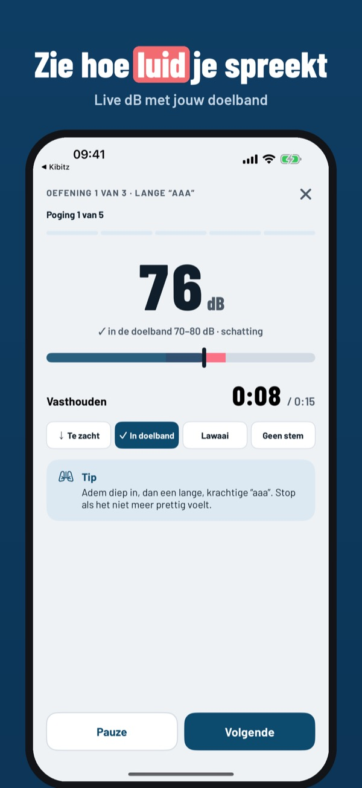
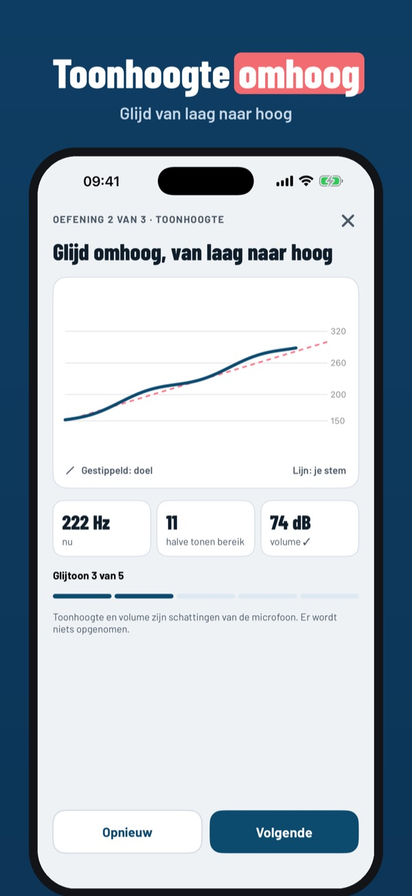
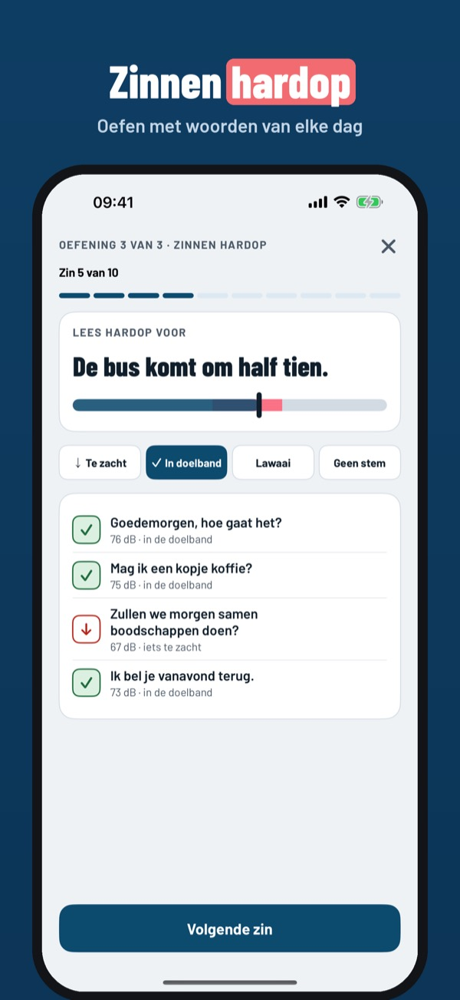
Voice Lift helpt je thuis de stemoefeningen te doen die je logopedist aanraadt. Voor mensen met Parkinson of een stem die zachter is geworden: je ziet live hoe luid je spreekt en of je in je doelband zit.
De dagelijkse basisset (lange “aaa” en 5 zinnen), de live meter en het weekoverzicht werken zonder aankoop. Voice Lift Plus is een eenmalige aankoop: volledige set, gesprek-monitor met seintjes, voortgang per maand en 3 maanden en het PDF-rapport. Geen abonnement.
Voice Lift is geen medisch hulpmiddel, stelt geen diagnose en vervangt geen logopedie. De dB-waarden zijn schattingen van de telefoonmicrofoon. Spreek je doel af met je logopedist. Er wordt geen geluid opgenomen of bewaard.
Terms of Use (EULA): https://www.apple.com/legal/internet-services/itunes/dev/stdeula/
Privacy: https://apps.baytech.nl/voicelift-eu/
Exercices de voix au quotidien
Exercez chaque jour le volume de votre voix et voyez en direct à quel point vous parlez fort. Une zone cible, un signal si vous parlez trop bas et un rapport PDF.
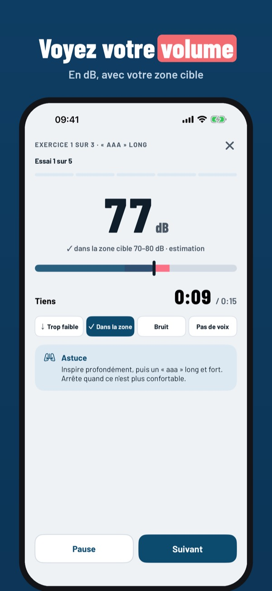
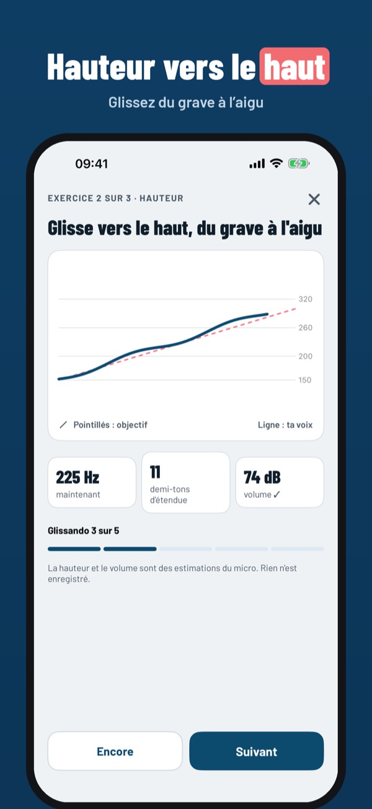
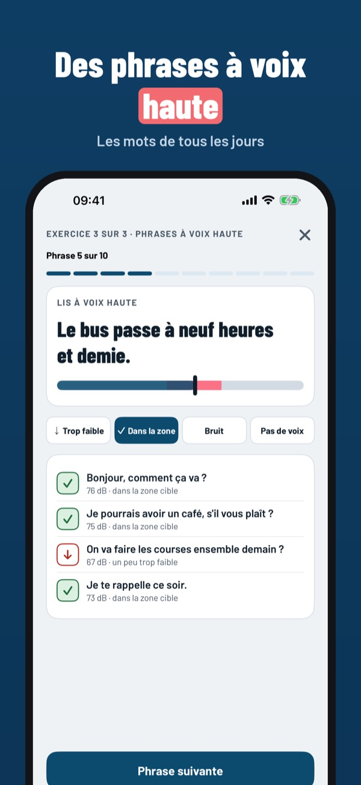
Voice Lift vous aide à faire chez vous les exercices de voix recommandés par votre orthophoniste. Pour les personnes atteintes de Parkinson ou dont la voix est devenue plus faible : vous voyez en direct votre volume et si vous êtes dans votre zone cible.
La série de base (« aaa » tenu et 5 phrases), le mesureur en direct et le bilan de la semaine s’utilisent sans achat. Voice Lift Plus est un achat unique : série complète, moniteur de conversation avec signaux, progrès sur 1 et 3 mois et rapport PDF. Sans abonnement.
Voice Lift n’est pas un dispositif médical, ne pose aucun diagnostic et ne remplace pas l’orthophonie. Les valeurs en dB sont des estimations du micro du téléphone. Fixez votre objectif avec votre orthophoniste. Aucun son n’est enregistré.
Terms of Use (EULA): https://www.apple.com/legal/internet-services/itunes/dev/stdeula/
Privacy: https://apps.baytech.nl/voicelift-eu/
Esercizi di voce ogni giorno
Allena ogni giorno il volume della voce e guarda dal vivo quanto parli forte. Una fascia obiettivo, un avviso se parli piano e un report in PDF.
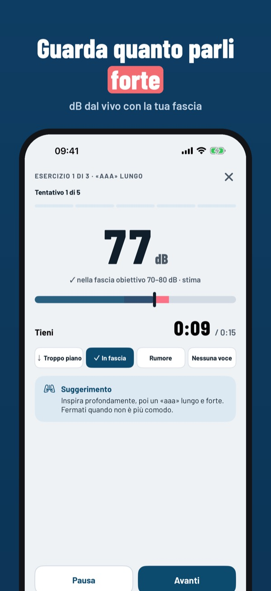
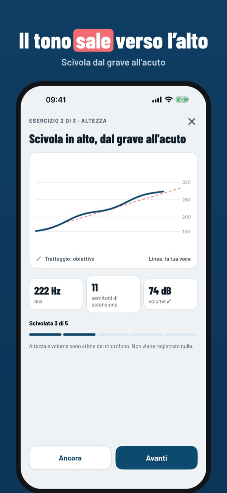
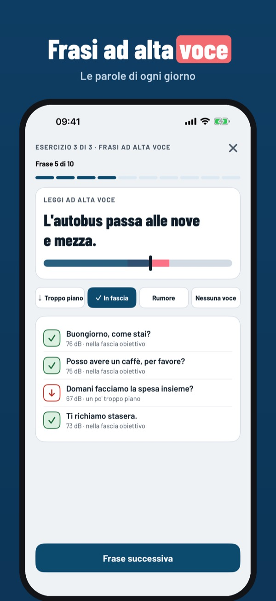
Voice Lift ti aiuta a fare a casa gli esercizi di voce consigliati dal tuo logopedista. Per chi ha il Parkinson o una voce diventata più debole: vedi dal vivo quanto parli forte e se sei nella tua fascia obiettivo.
La serie di base («aaa» lunga e 5 frasi), il misuratore dal vivo e il riepilogo settimanale funzionano senza acquisto. Voice Lift Plus è un acquisto unico: serie completa, monitor con avvisi, progressi su 1 e 3 mesi e report PDF. Nessun abbonamento.
Voice Lift non è un dispositivo medico, non fa diagnosi e non sostituisce la logopedia. I valori in dB sono stime del microfono del telefono. Concorda l’obiettivo con il tuo logopedista. Nessun suono viene registrato.
Terms of Use (EULA): https://www.apple.com/legal/internet-services/itunes/dev/stdeula/
Privacy: https://apps.baytech.nl/voicelift-eu/
Ejercicios de voz cada día
Practica cada día el volumen de tu voz y mira en directo lo alto que hablas. Una franja objetivo, un aviso si hablas bajo y un informe en PDF.
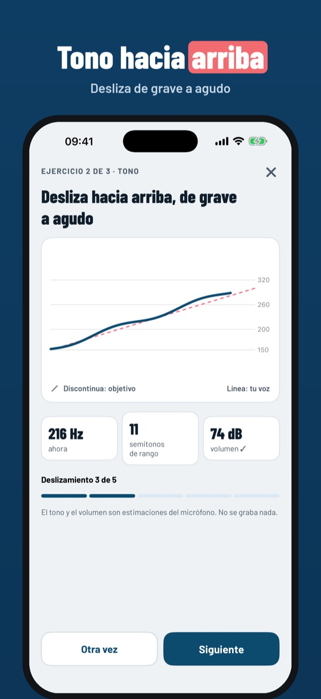
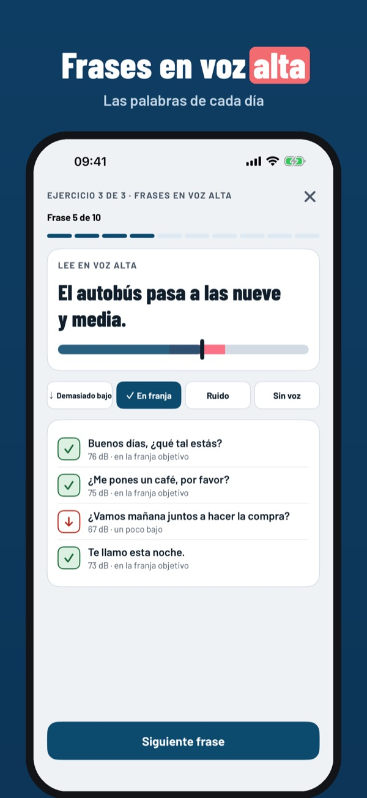
Voice Lift te ayuda a hacer en casa los ejercicios de voz que te recomienda tu logopeda. Para personas con Parkinson o con una voz que se ha vuelto más débil: ves en directo lo alto que hablas y si estás en tu franja objetivo.
La serie básica («aaa» largo y 5 frases), el medidor en directo y el resumen semanal funcionan sin compra. Voice Lift Plus es una compra única: serie completa, monitor con avisos, progreso de 1 y 3 meses e informe PDF. Sin suscripción.
Voice Lift no es un producto sanitario, no hace diagnósticos y no sustituye a la logopedia. Los valores en dB son estimaciones del micrófono del teléfono. Acuerda tu objetivo con tu logopeda. No se graba ningún sonido.
Terms of Use (EULA): https://www.apple.com/legal/internet-services/itunes/dev/stdeula/
Privacy: https://apps.baytech.nl/voicelift-eu/
Codzienne ćwiczenia głosu
Ćwicz codziennie głośność głosu i zobacz na żywo, jak głośno mówisz. Zakres docelowy, sygnał, gdy mówisz za cicho i raport PDF.
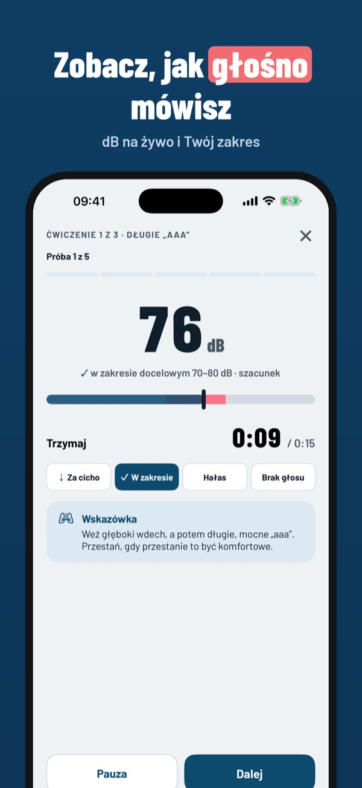
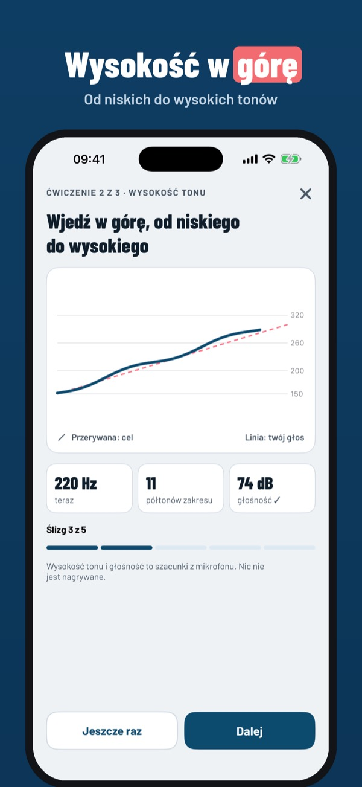
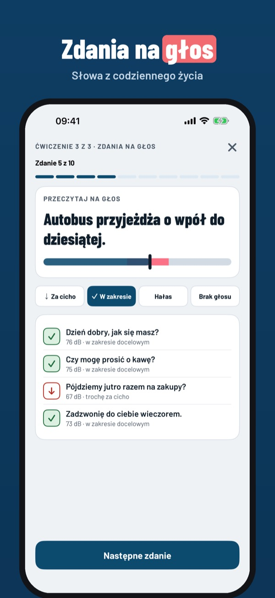
Voice Lift pomaga wykonywać w domu ćwiczenia głosowe zalecone przez logopedę. Dla osób z chorobą Parkinsona lub z głosem, który stał się cichszy: widzisz na żywo, jak głośno mówisz i czy mieścisz się w zakresie docelowym.
Podstawowa seria (długie „aaa” i 5 zdań), miernik na żywo i podsumowanie tygodnia działają bez zakupu. Voice Lift Plus to jednorazowy zakup: pełna seria, monitor rozmowy z sygnałami, postępy z 1 i 3 miesięcy oraz raport PDF. Bez subskrypcji.
Voice Lift nie jest wyrobem medycznym, nie stawia diagnozy i nie zastępuje logopedy. Wartości w dB są szacunkami z mikrofonu telefonu. Ustal cel z logopedą. Żaden dźwięk nie jest nagrywany.
Terms of Use (EULA): https://www.apple.com/legal/internet-services/itunes/dev/stdeula/
Privacy: https://apps.baytech.nl/voicelift-eu/
Tägliche Stimmübungen in dB
Übe jeden Tag die Lautstärke deiner Stimme und sieh live, wie laut du sprichst. Ein Zielbereich, ein Hinweis, wenn du zu leise wirst und ein PDF-Bericht.
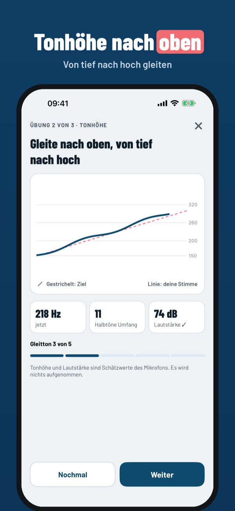
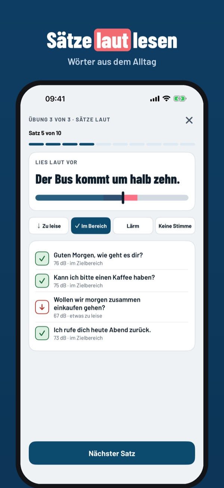
Voice Lift hilft dir, zu Hause die Stimmübungen zu machen, die deine Logopädin oder dein Logopäde empfiehlt. Für Menschen mit Parkinson oder einer leiser gewordenen Stimme: Du siehst live, wie laut du sprichst und ob du im Zielbereich bist.
Das Basistraining (langes „aaa“ und 5 Sätze), die Live-Anzeige und der Wochenüberblick funktionieren ohne Kauf. Voice Lift Plus ist ein Einmalkauf: volles Training, Gesprächsmonitor mit Hinweisen, Verlauf über 1 und 3 Monate und PDF-Bericht. Kein Abo.
Voice Lift ist kein Medizinprodukt, stellt keine Diagnose und ersetzt keine Logopädie. Die dB-Werte sind Schätzungen des Handymikrofons. Sprich dein Ziel mit deiner Logopädin ab. Es wird kein Ton aufgenommen.
Terms of Use (EULA): https://www.apple.com/legal/internet-services/itunes/dev/stdeula/
Privacy: https://apps.baytech.nl/voicelift-eu/
Dagliga röstövningar i dB
Öva röstens volym varje dag och se direkt hur starkt du talar. Ett målområde, en signal när du talar för tyst och en rapport som PDF.
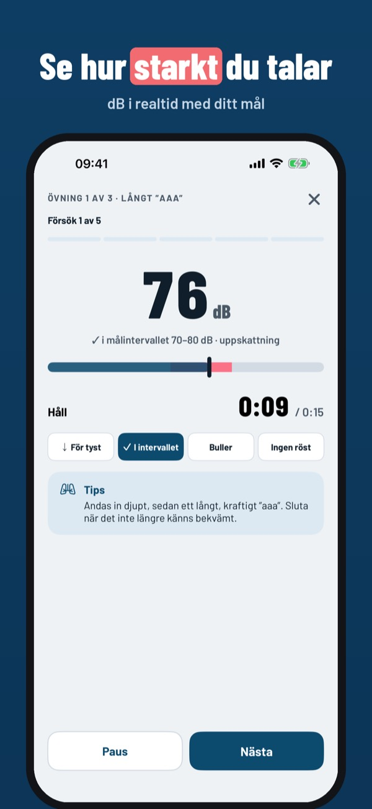
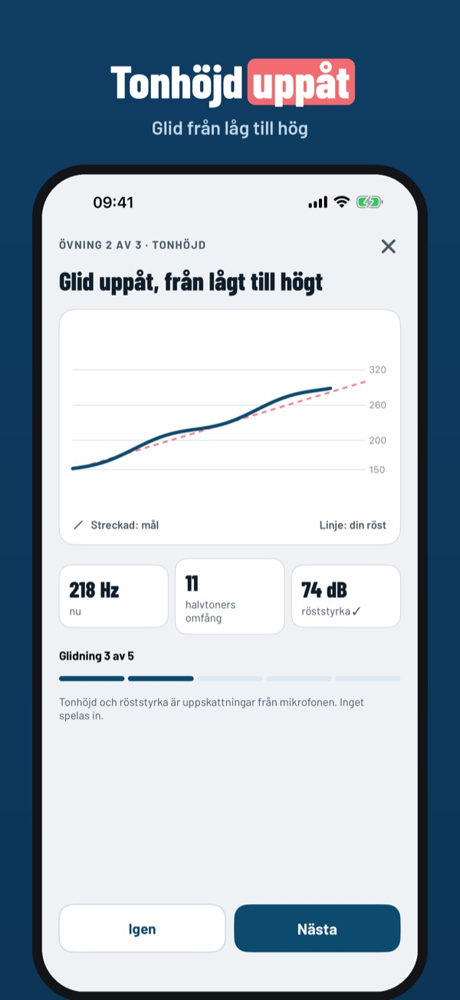
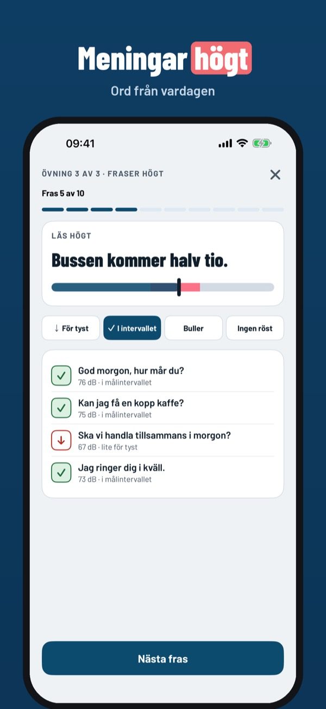
Voice Lift hjälper dig att göra röstövningarna som din logoped rekommenderar hemma. För personer med Parkinson eller en röst som blivit svagare: du ser direkt hur starkt du talar och om du ligger i ditt målområde.
Grundserien (långt ”aaa” och 5 meningar), mätaren i realtid och veckoöversikten fungerar utan köp. Voice Lift Plus är ett engångsköp: hela serien, samtalsmonitor med signaler, framsteg över 1 och 3 månader och PDF-rapport. Ingen prenumeration.
Voice Lift är ingen medicinteknisk produkt, ställer ingen diagnos och ersätter inte logopedi. dB-värdena är uppskattningar från telefonens mikrofon. Bestäm ditt mål med din logoped. Inget ljud spelas in.
Terms of Use (EULA): https://www.apple.com/legal/internet-services/itunes/dev/stdeula/
Privacy: https://apps.baytech.nl/voicelift-eu/